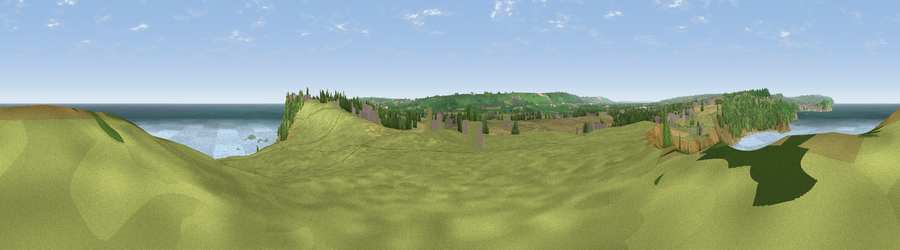

Viewpoint near Osgodby
#3629 in England · top 10% of its area beats it · near OsgodbyWhere it is
The exact computed spot (TA 07925 84025). Click the marker for map links.
The view, rendered

A 360° render of this exact spot computed from the terrain model, tree cover and land cover — summer colours, afternoon light, calibrated against photographs of famous viewpoints. Real trees, hedges and buildings will differ in detail.
The panorama
Grey silhouette: terrain skyline in each direction (720 bearings, Earth curvature and refraction included). Dashed green: skyline with trees (+15 m) and buildings (+8 m) as obstacles. Blue strip: how far the ground is visible on each bearing.
Where the view opens
Wedge length = distance to the farthest visible ground on that bearing (vegetation-aware). Rings at 10, 25 and 50 km.
What fills the view
66% water · 23% grassland · 5% woodland · 3% cropland · 2% wetland ·
Angular shares of the visible panorama (visual magnitude), not map area. Landscape diversity 0.44 (0–1 Shannon).
Key numbers
More beautiful places nearby
The staircase of upgrades: each row has a higher view potential than everything closer. Driving times are estimates from straight-line distance, calibrated against real road routing — check an actual route before setting out.
| Place | Direction | Drive | Score |
|---|---|---|---|
| Viewpoint near Osgodby | WNW · 2 km | ~6 min | 74.0 |
| Viewpoint near Osgodby | WNW · 3 km | ~8 min | 75.6 |
| Olivers Mount | NW · 5 km | ~11 min | 80.3 |
| Viewpoint near Ravenscar | NNW · 19 km | ~33 min | 82.7 |
| Viewpoint near Ravenscar | NNW · 20 km | ~34 min | 87.3 |
| Viewpoint near Ravenscar | NNW · 22 km | ~36 min | 90.0 |
| Viewpoint near Easington | NW · 49 km | ~70 min | 90.2 |
| The Knoll | SSW · 425 km | ~401 min | 91.0 |
54.24055, -0.34545 · source: screening · position refined by local search. Computed location — check access rights before visiting.